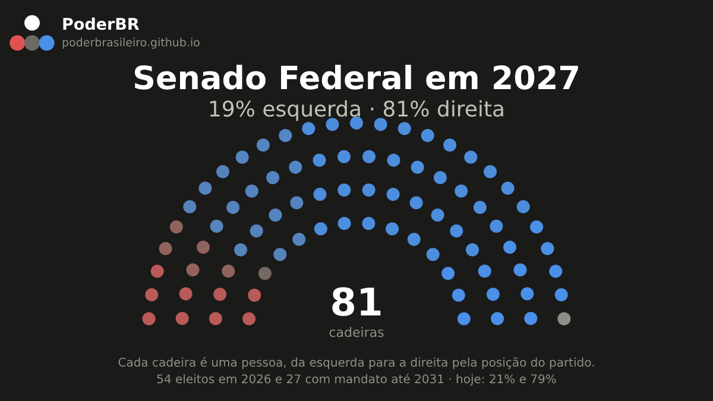
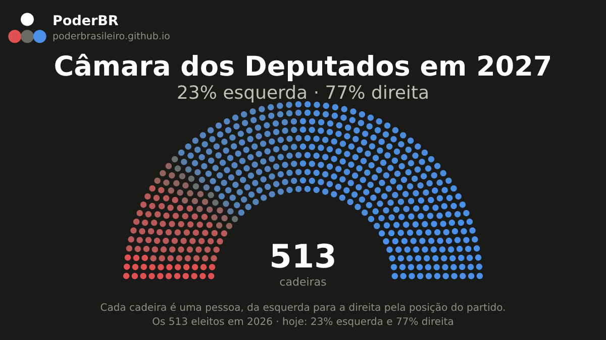
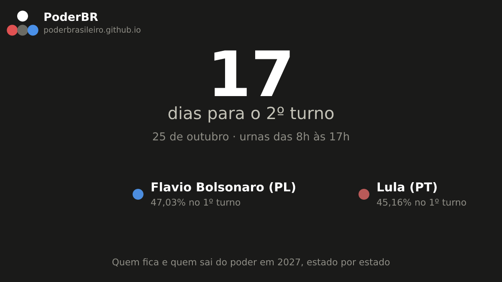

Pauta de 08/10/2026
Clique em Copiar texto e cole no X, ou use Abrir no X que já vai preenchido. A imagem aparece sozinha na prévia do link — não precisa baixar nem anexar.
1. Estreia — fixe este no perfil
Quem ocupa o poder no Brasil, num quadro só: presidente, ministros, STF, governadores, senadores, deputados e os prefeitos das 5.569 cidades. Dados públicos, atualizados todo dia. Sem vínculo com governo ou partido. https://poderbrasileiro.github.io/c/poderbr.html #Brasil #Congresso
A imagem entra sozinha pela prévia do link. Não precisa anexar nada.

2. Estreia
Senado Federal em 2027: 81% de direita e 19% de esquerda a partir de fevereiro de 2027. Mais à direita que hoje, que está em 79%. São 54 eleitos em 2026 mais 27 com mandato até 2031. Cadeira por cadeira: https://poderbrasileiro.github.io/c/2027-senador.html #Senado #Eleições2026
A imagem entra sozinha pela prévia do link. Não precisa anexar nada.

3. Estreia
Câmara dos Deputados em 2027: 77% de direita e 23% de esquerda a partir de fevereiro de 2027. Praticamente o mesmo de hoje. Os 513 trocam de uma vez. Cadeira por cadeira: https://poderbrasileiro.github.io/c/2027-deputado.html #Câmara #Eleições2026
A imagem entra sozinha pela prévia do link. Não precisa anexar nada.

4. Estreia
Faltam 17 dias para o 2º turno, em 25 de outubro. Flavio Bolsonaro (PL) 47,03% e Lula (PT) 45,16% no 1º turno. No site dá pra ver quem fica e quem sai do poder em 2027, estado por estado: https://poderbrasileiro.github.io/c/contagem.html #Eleições2026 #SegundoTurno
A imagem entra sozinha pela prévia do link. Não precisa anexar nada.

Refeita sozinha todo dia. O que já apareceu aqui não volta em pautas futuras.